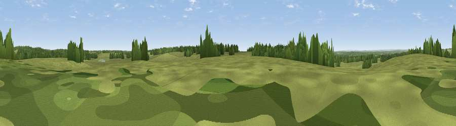

Dur Hill
#33507 in England · top 44% of its area beats it · near BurleyThe view, rendered

A 360° render of this exact spot computed from the terrain model, tree cover and land cover — summer colours, afternoon light, calibrated against photographs of famous viewpoints. Real trees, hedges and buildings will differ in detail.
The panorama
Grey silhouette: terrain skyline in each direction (720 bearings, Earth curvature and refraction included). Dashed green: skyline with trees (+15 m) and buildings (+8 m) as obstacles. Blue strip: how far the ground is visible on each bearing.
Where the view opens
Wedge length = distance to the farthest visible ground on that bearing (vegetation-aware). Rings at 10, 25 and 50 km.
What fills the view
68% grassland · 27% woodland · 3% cropland · 1% built-up
Angular shares of the visible panorama (visual magnitude), not map area. Landscape diversity 0.35 (0–1 Shannon).
Key numbers
More beautiful places nearby
The staircase of upgrades: each row has a higher view potential than everything closer. Driving times are estimates from straight-line distance, calibrated against real road routing — check an actual route before setting out.
| Place | Direction | Drive | Score |
|---|---|---|---|
| Viewpoint near Burley | NNE · 2 km | ~6 min | 41.0 |
| Viewpoint near Hightown | N · 3 km | ~8 min | 43.3 |
| Viewpoint near Hurn | SW · 7 km | ~15 min | 53.7 |
| Warren Hill | SSW · 11 km | ~20 min | 60.1 |
| Viewpoint near Totland | SSE · 20 km | ~33 min | 75.0 |
| West High Down | SE · 20 km | ~33 min | 79.8 |
| Tennyson Down | SE · 20 km | ~34 min | 83.2 |
| Viewpoint near Brook | SE · 24 km | ~40 min | 84.2 |
50.80887, -1.72660 · source: osm peak · position refined by local search. Computed location — check access rights before visiting.